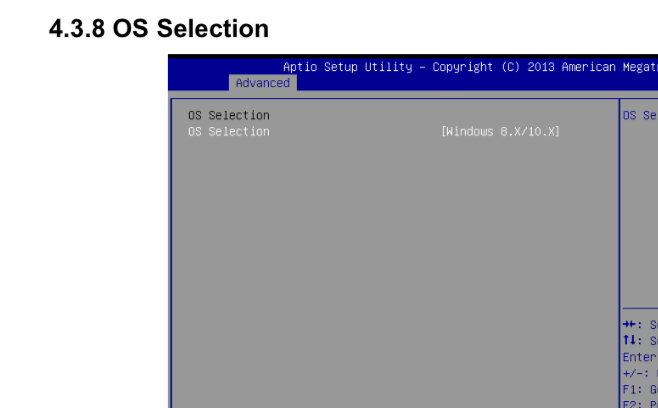

Linux重启失败排查记录
文章目录
一套新的设备，CPU使用的是 J1800，跑公司的产品出现了重启失败的情况，排除了是服务没正常退出的问题。也确认了之前的硬件配置上不会出现这个问题。因为产品跑的是 Debian10 的 Linux 系统，所以安装了一个全新的 Debian10 来做测试，也会出现重启卡死的现象。为了解决这个问题，进行了排查，并写下这篇文章做一下记录，方便以后其它问题的调试，和方便遇到同样问题的人。
解决方法
先说最后的解决方法，在 bios 中，修改 OS Selection 类型为 Windows 8.x，即可解决问题。 
这个解决方法是在网上搜到的，网上能找到好几篇说自己用的 CPU 是 J1900 遇到了这个问题，最后通过上面说的修改 bios 方法解决了问题，虽然 CPU 不是完全一样，但应该J开头的 CPU 都有相同的毛病。
排查过程
因为之前同事已经折腾过，所以可以肯定排除了服务没退出导致无法正常关机的情况。我尝试查看了当输入 reboot 后的情况，无法重启的现象并非必现，是一种时不时能正常重启，时不时不行的情况。当无法重启时，终端显示 watchdog： watchdog0: watchdog did not stop! 同时屏幕卡死，意思是连光标也不闪了，同事研究过并非 watchdog 导致无法重启。光标不闪让我感觉可能是图形上出了问题，所以首先我在 Linux 启动参数中加上 nomodeset 的参数，这次卡死后，光标依然能正常闪烁，但依然会一直卡住无法重启。下一步我的想法是让终端输出更多的日志，好排查问题。内核日志是分输出级别的
| 等级 | 类型 | 描述 |
|---|---|---|
| 0 | (KERN_EMERG) | system is unusable |
| 1 | (KERN_ALERT) | action must be taken immediately |
| 2 | (KERN_CRIT) | critical conditions |
| 3 | (KERN_ERR) | error conditions |
| 4 | (KERN_WARNING) | warning conditions |
| 5 | (KERN_NOTICE) | normal but significant condition |
| 6 | (KERN_INFO) | informational |
| 7 | (KERN_DEBUG) | debug-level messages |
默认终端应该只会打印4以下级别的内核日志。有一个方法查看和临时修改打印的日志级别就是查看和修改文件 /proc/sys/kernel/printk
|
|
4个数字分别代表如下：
- 控制台日志级别：优先级高于该值的消息将被打印至控制台。
- 缺省的消息日志级别：将用该值来打印没有优先级的消息。
- 最低的控制台日志级别：控制台日志级别可能被设置的最小值。
- 缺省的控制台：控制台日志级别的缺省值。
我直接把4个数值都设为8，让终端尽可能多的打印日志
|
|
这样设置后，当重启卡死时，卡在的地方是
|
|
在没有卡死的情况下，上面那句之后会打印多如下的内容，并最终重启成功
|
|
我查过 Linux 的重启原理，通过对 CPU 某个针脚发送电信号来达到重启的功能，而我查看过源代码这种操作是在日志 reboot: Restarting system 之后。 查到这里我认为这个重启时不时失效的情况，并不是硬件重启相关的操作导致无法重启，而是内核执行重启模块操作之前的某个操作卡死导致的无法重启。下一步我准备通过添加日志重编内核，或者使用 kprobe 方式来进行更深入的调试，不过因为途中我已经找到了通过修改 bios 能解决问题，没继续进行更多的排查。
另一种重启方法
在查看解决方法时，找到了一种使用sysrq来重启的方法
|
|
这种方法能重启成功，也说明了并非硬件在重启上出了问题，而是其它地方导致。我也是第一次知道原来键盘是有sysrq这个键，就在insert键上方。上图的命令例如 b 是重启，那对应在键盘上按下 alt+b+sysrq 也能实现重启。我试过按上述按键重启，要多尝试才知道按的方法，顺序不对会失败。但上面的重启方法并不会正常停止服务，所以非必须的话，不应该直接使用。
文章作者 hao
上次更新 2023-03-09